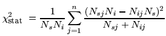
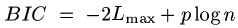
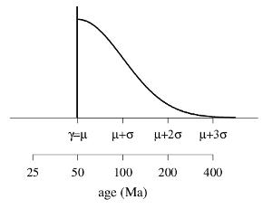

Mixture models
For fission track data, the program automatically performs
a χ2-test for statistical homogeneity, based
on the χ2-statistic:

The corresponding p-value is shown on the radial plot. A p-value
is the probability of observing a χ2stat-value
greater or equal than the observed value under the null assumption of
age homogeneity. If the p-value is less than 0.05, say,
then the underlying age distribution contains more than one mode
and a mixture modelling algorithm may be employed (Galbraith and Green, 1990).
To do this, click Options → Mixture models and select the desired
number of peaks (between 0 and 5). The radial plot will display
the peak centres as radial lines and summarise the numerical results
(ages and proportions) under the radial scale.
The algorithm used for the mixture modelling is a hybrid one using both
deterministic parts (taken from Galbraith, 2005) and MCMC ingredients.
Because of the stochastic nature of
the method, the user is advised to run the mixture modelling function several
times, to make sure that local minima have been avoided.
The auto option minimises the Bayes Information Criterion (BIC)
to select the optimal (i.e., parsimonious) number of age components:

where Lmax is the maximum likelihood, p is the number of age components
and n is the number of grains (Galbraith, 2005).
For Other data, a different algorithm is used, based on the normal
mixture modelling algorithm of Galbraith (2005, section 5.5.2). The output
comprises the peak locations and proportions. For fission track data, the
data are log-transformed prior to the mixture modelling. For Other
data, the log-transformation is only enforced if the Logarithmic
option is selected in the Transformation menu. Otherwise, the mixture
modelling will use the raw data. As a consequence, the peak locations will
generally differ depending on the selected data transformation for Other
data. For fission track data, the mixture models will always yield the same results.
Minimum age model
Sometimes one is interested in just the youngest age component of a finite mixture.
This may be the case for detrital samples with a volcanic component, to estimate
the depositional age. This can be modelled by a four parameter probability distribution,
in which a proportion π of the population belongs to a discrete peak at
time γ and the remaining (1-π) belong to a truncated normal distribution
with mean μ and standard deviation σ.
DensityPlotter and RadialPlotter implement a simplified
version of this model, in which it is assumed that γ=μ:

The log likelihood function is maximized by a robust and deterministic but time consuming
grid search algorithm, and the standard deviation of the minimum age is calculated
by inverting the Fisher Information matrix, which requires numerically calculating
the second derivatives of the log-likelihood. These calculations are computationally
intensive and it may take a few seconds before the results are shown.
As with the finite mixture models, the results will be depend on the chosen data
transformation (linear or logarithmic). As discussed by Galbraith (2005, p.107),
the three parameter model may produce slightly biased results, particularly for
fission track data with low counts, in which the normal approximation is not valid.
In these cases, it may be better to use other computational tools, or
to employ a finite mixture model.